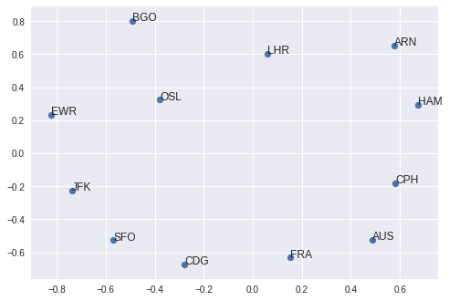
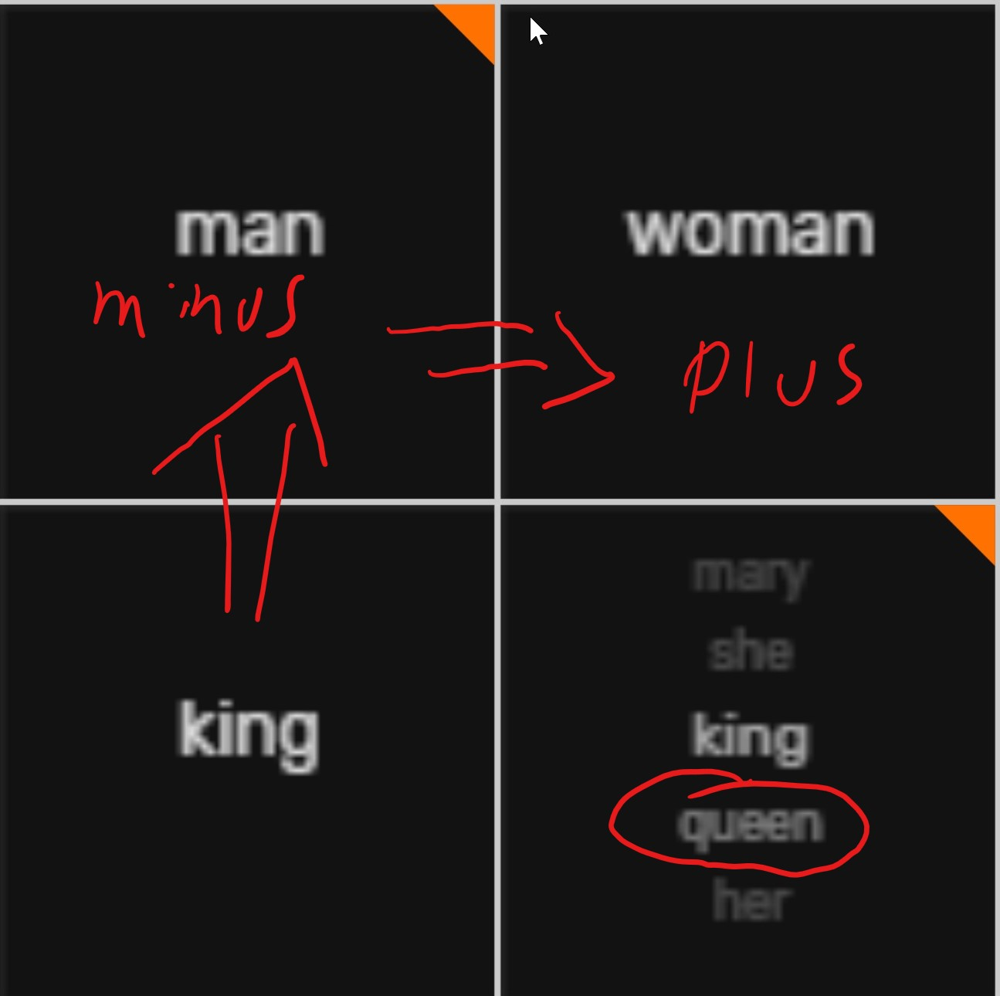
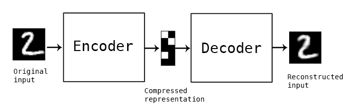
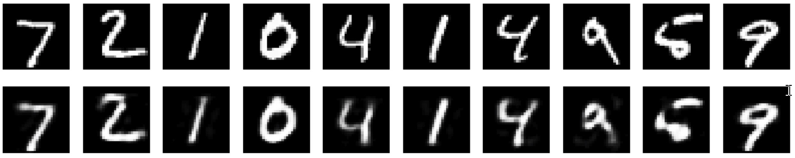
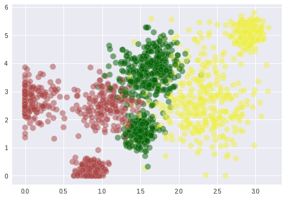

### Preparation
Unsupervised Learning with TensorFlow
Oliver Zeigermann
/
@DJCordhose
https://djcordhose.github.io/ai/2019_tf_unsupervised.html
### How to turn categories into numbers? * neural networks can not deal with symbols * only numerical values can be processed by neural networks * even words and texts can be seen as categories / symbols * would it be possible to still make those numbers carry the semantic of the symbols?
### Motivating Exercise: Encoding Airports _find a numerical representation for airports_ * choose a few airports of your choice and bring them into numbers * why did you choose this representation? * do you think it is a good one?
### Label Encoding Normalize symbols such that they contain only values between 0 and number_of_symbols_in_vocab-1. <pre><code>text = ["paris", "paris", "tokyo", "amsterdam"] paris = 0 tokyo = 1 amsterdam = 2 encoded_text = [0, 0, 1, 2]</code></pre> <small> http://scikit-learn.org/stable/modules/generated/sklearn.preprocessing.LabelEncoder.html </small>
### Issues with turning symbols into integers * numbers close to each other suggest a relation, but there might actually be none * what would 7.5 mean? * and what -8457878574 mean?
### Bag of Words - One/Multiple Hot Encoding <img src="img/nlp/acolyer/word2vec-one-hot.png"> <small> https://blog.acolyer.org/2016/04/21/the-amazing-power-of-word-vectors/ </small>
### Issues with One-Hot-Encoding * high dimensionalty * sparse representation * neighborhood does not mean anything
### Enter: Embeddings * Embedding: Transform a high dim. vector space to a lower one * word/symbol Embedding: Transform sparse one hot encodings into a dense lower dim. encoding <small>https://en.wikipedia.org/wiki/Word_embedding</small>
<img src="img/nlp/word_embeddings.png" height="550px"> <small> <a href="https://github.com/fchollet/deep-learning-with-python-notebooks/blob/master/6.1-using-word-embeddings.ipynb"> Deep Learning with Python </a> </small>
### Assumption: symbols/words in similar contexts have similar meaning * Why not have a few semantic dimensions and embed symbols/words into them? * You define what is context and thus gives meaning * For random texts this might be just the words that surround others
## Types of Learning <img src='img/types-of-ml.jpg'> <small> https://www.facebook.com/nipsfoundation/posts/795861577420073/ <br> https://ranzato.github.io/publications/tutorial_deep_unsup_learning_part1_NeurIPS2018.pdf </small>
### Introduction to Embeddings  <small> https://colab.research.google.com/github/DJCordhose/ai/blob/master/notebooks/2019_tf/embeddings.ipynb </small>
### Hands-On: Find an application for an embedding * Run the introductory notebook * can you come up with an interpretation for the semantics of the two dimensions of the embedding? * then either 1. change the representation for airports and try to achieve good results 1. come up with an application of your own (this is hard, make sure it still fits into the structure of the notebook) <small> https://colab.research.google.com/github/DJCordhose/ai/blob/master/notebooks/2019_tf/embeddings.ipynb </small>
### Arithmetic on Embeddings _has been exaggerated recently, but still fun_  <small> http://bryanlohjy.gitlab.io/spacesheet/word2vec.html </small>
### Suprising Application of Embeddings <img src='img/embedding-spell-checker.png' height="500px"> <small> https://twitter.com/jeremyphoward/status/997264148655259648 </small>
### Word Embeddings using word2vec _main assumption: words appearing in similar contexts have similar meaning_ <a href='https://projector.tensorflow.org'> <img src="img/nlp/embedding-projector.png" height="350px"> </a> <small> https://projector.tensorflow.org </small>
### There is more to Unsupervised Deep Learning * Autoencoders * VAEs * Generative Adversarial Network (GAN)
### Unsupervised Deep Learning Workshop at NIPS 2018 * https://www.facebook.com/nipsfoundation/posts/795861577420073/ * Slides: https://ranzato.github.io * https://ranzato.github.io/publications/tutorial_deep_unsup_learning_part1_NeurIPS2018.pdf * https://ranzato.github.io/publications/tutorial_deep_unsup_learning_part2_NeurIPS2018.pdf
### Autoencoders * reproduce an input while going through a bottleneck * latent representation is what you are interested in  <small> https://blog.keras.io/building-autoencoders-in-keras.html </small>
### Why Autoencoders * compression * data denoising * dimensionality reduction (for data visualization) * building an abstract representation for further use <small> https://blog.keras.io/building-autoencoders-in-keras.html </small>
### Introduction to Autoencoders _reproducing the MNIST data set_  <small> https://colab.research.google.com/github/DJCordhose/ai/blob/master/notebooks/2019_tf/autoencoders_intro.ipynb </small>
### Autoencoding tabular data _resulting in an advanced Keras lecture_  <small style="font-size: large"> https://colab.research.google.com/github/DJCordhose/ai/blob/master/notebooks/2019_tf/autoencoders_tabular.ipynb </small>
### Exercise: Optimize training _try to generate a more telling visualization_ * make sure you understand the architecture * tune loss ratios * sizes of input encodings * what results do you get when you just average over the encoded inputs? <small style="font-size: large"> https://colab.research.google.com/github/DJCordhose/ai/blob/master/notebooks/2019_tf/autoencoders_tabular.ipynb </small>
### VAE * Intro: https://youtu.be/9zKuYvjFFS8 * https://github.com/tensorflow/tensorflow/blob/r1.11/tensorflow/contrib/eager/python/examples/generative_examples/cvae.ipynb * Sean's Notebook: https://colab.research.google.com/drive/1f73wONMp8U2LvAmN0MNGyflqGFog0g2S * VAE: * https://towardsdatascience.com/intuitively-understanding-variational-autoencoders-1bfe67eb5daf * http://tiao.io/posts/implementing-variational-autoencoders-in-keras-beyond-the-quickstart-tutorial/
## GANs
### Understanding GANs <a href='https://poloclub.github.io/ganlab/'> <img src='img/tfjs/gan-lab.png'> </a> <small> https://twitter.com/minsukkahng/status/1037016214575505409 https://poloclub.github.io/ganlab/ https://minsuk.com/research/papers/kahng-ganlab-vast2018.pdf </small>
### GANS New blog post: "GANs and Divergence Minimization", which covers the perspective of GANs as minimizing an "adversarial divergence" and draws parallels to maximum likelihood training. Also provides some motivation for better evaluation of GANs. https://t.co/XibWmoWEw8 https://t.co/tik01df1aS (https://twitter.com/colinraffel/status/1076179243678093312?s=03)